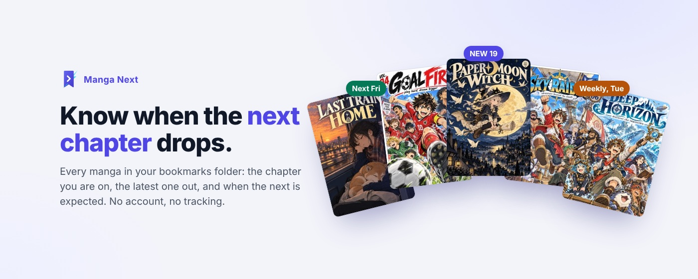

Manga Next
Know when the next chapter drops.
Bookmark the chapter you stop at. Manga Next tells you when the next one is out.
Add to Chrome

What you get
- One list of every series in your Manga bookmarks folder: where you are, the latest chapter, when the next is expected.
- A badge and a notification when a chapter drops. One click opens it.
- A folder that cleans itself: bookmark a newer chapter and the old one goes to a bin, kept 60 days.
- Your list on your phone through a synced bookmark. Bookmark where you stop; it comes back to the computer.
When you have a minute
- Your reading: this week's releases, the quickest series to catch up on, finished ones to binge, the ones piling up.
- News: manga headlines ranked by what matters, your series first.
- Auto-scroll: one shortcut, the page scrolls at a steady pace.
What it does not do
No account. No sign-in. No tracking. The only thing that leaves your browser is a series title, sent to Comick and MangaUpdates to find release dates. Privacy policy.